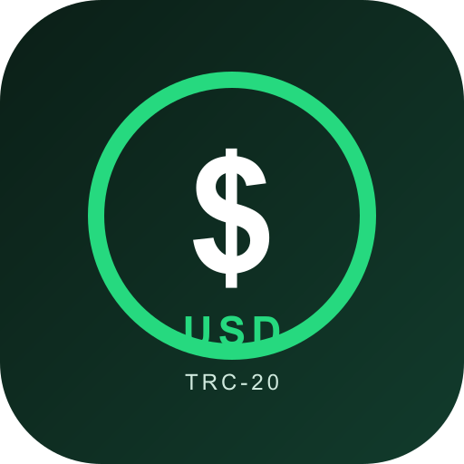

Mini Tether USD USD
TRC-20 · TRON mainnet · 6 decimais · supply inicial de 100.000.000.000
owner pode cunhar. O endereço do contrato é a única identidade válida.Decimais / Supply
6 decimais · 100.000.000.000 iniciais
Não é fixo: mint owner-only; burn pelo titular.
Verificação
Source verificado no Tronscan (verify_status 2)
Token Info/reputação (logo, descrição) ainda pendentes no explorador.
Liquidez / Preço
Não existe pool.
Sem DEX, sem cotação, sem volume. Carteira mostra saldo, não valor.
Adicionar à carteira
Pede à TronLink (ou provedor TRON compatível) do seu navegador para adicionar o token à sua lista. Não é transação, não tem taxa. A logo exibida depende do catálogo da carteira — este pedido não pinta o ícone.
Características do ativo
| Padrão | TRC-20 (TRON), 6 decimais, compatível com ERC-20 na interface |
|---|---|
| Supply | 100.000.000.000 iniciais; variável — mint(address,uint256) só do owner, burn(uint256) do titular |
| Poderes do owner | mint · blacklist/unBlacklist · setName · setSymbol · transferOwnership |
| O que não existe | proxy/upgrade, taxa de transferência, pausa, resgate, metadata on-chain (logoURI/tokenURI) |
| Endereço do owner | TP3fqwTHrEnG5AqbJEUyQbCmmETqUXknvg |
| Reputação no explorador | Suspicious — declarado, ver whitepaper §4.2 (o nome contém "Tether", o que dispara anti-mimicry) |
| Liquidez | nenhuma pool criada em qualquer DEX |
USD não autentica nada: qualquer contrato pode usá-lo. Quem confere o ativo é o endereço, nunca o nome ou a logo. Nome e símbolo podem até ser alterados pelo owner.Whitepaper
Mini Tether USD — Whitepaper técnico v1.0
Arquitetura, poderes do owner, riscos declarados, como verificar por conta própria.
Registro público
token.json · tokenlist.json
Metadata de referência (o contrato não implementa tokenURI).